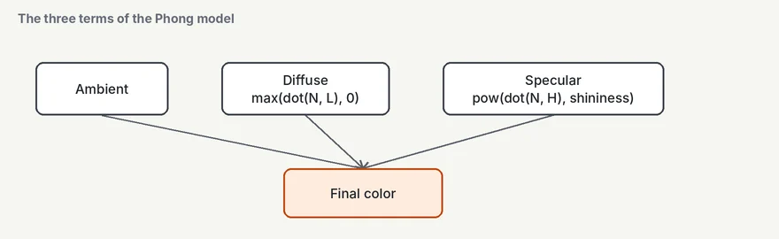

Lighting
Review#
You can now light a scene. The model is simple, and it is the foundation that every later technique refines.
Glossary#
- Color vector: red, green and blue intensities. Reflection is a component-wise multiplication of light color and surface color.
- Phong lighting model: ambient + diffuse + specular.
- Ambient: a constant term that fakes indirect light.
- Diffuse: brightness from the angle between the normal and the direction to the light:
max(dot(N, L), 0). - Specular: a highlight from the angle between the reflected light and the direction to the viewer, raised to the shininess exponent.
- Normal: a unit vector perpendicular to the surface.
- Normal matrix: the inverse transpose of the model matrix's upper-left 3×3, used to transform normals correctly.
- Material: the set of values describing how a surface reacts to light.
- Diffuse map / specular map: textures that supply the material's color and shininess per pixel.
- Directional light: parallel rays with a direction and no position.
- Point light: a position, shining in all directions, with attenuation over distance.
- Attenuation: the fall-off of light with distance.
- Spotlight: a point light limited to a cone, with a soft edge between an inner and outer cutoff.

What changed in the renderer#
VertexOutcarries the world-space position and normal to the fragment function.- Vertex uniforms gained a normal matrix.
- A second uniform struct, bound to fragment buffer slot 1, holds lights, the camera position and material values.
- Lights that come in variable numbers live in their own buffer and are indexed through a pointer.
- Two pipeline states share one vertex function: a lit one for objects and an unlit one for lamps.
Where the model falls short#
Phong lighting is an artistic approximation. Its weaknesses point straight at later chapters:
- Highlights break down at grazing angles. See Blinn-Phong.
- The colors are computed in the wrong color space. See Gamma Correction.
- Nothing casts a shadow. See Shadow Mapping.
- Flat surfaces look flat. See Normal Mapping.
- Materials do not conserve energy and need hand tuning per scene. See PBR.
Before any of that, cubes are getting boring. The next section loads real models.